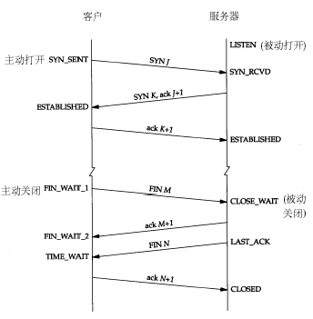

[Go] 解决Go Http服务出现大量Timewait
解决Go Http服务出现大量Timewait
背景
运维反馈得知有少部分机器上出现了大量的TIME_WAIT,上面运行着一个老版本的Go写的Http服务组件。
解决思路
1. 链接服务复用设置
看到TIME_WAIT首先想到的是在高并发下大量的短链接或者业务未正常关闭。通过阅读代码发现内部使用的是官方的HTTP。需要注意的是,如果使用的是官方的net/http直接用http.ListenAndServe启动的话默认支持长连接。
// Serve a new connection.
func (c *conn) serve(ctx context.Context) {
//HTTP协议处理
//..
// 判断是否关闭了KeepAlive
if !w.conn.server.doKeepAlives() {
// We're in shutdown mode. We might've replied
// to the user without "Connection: close" and
// they might think they can send another
// request, but such is life with HTTP/1.1.
return
}
// 判断句柄过期时间
// idleTimeout: 当次请求完成后下一次请求到来的最大等待时间
if d := c.server.idleTimeout(); d != 0 {
c.rwc.SetReadDeadline(time.Now().Add(d))
if _, err := c.bufr.Peek(4); err != nil {
return
}
}
c.rwc.SetReadDeadline(time.Time{})
}
}
默认是支持长连接。也就是说服务会自动复用TCP连接。
func (srv *Server) ListenAndServe() error {
if srv.shuttingDown() {
return ErrServerClosed
}
addr := srv.Addr
if addr == "" {
addr = ":http"
}
ln, err := net.Listen("tcp", addr)
if err != nil {
return err
}
return srv.Serve(tcpKeepAliveListener{ln.(*net.TCPListener)}) //监听TCP,KeepAlive周期3分钟
}
从上述代码我们可以看到,只要合理设置了IdleTimeout=0和serve.disableKeepAlives = 0就能实现链接复用。实际上直接调用http.ListenAndServe()就是如此设置,由于没有实例化http.Server的话是无法进行设置,我们排除了这两个参数导致复用失效的因素。
2.协议
通过步骤1排除了服务端设置的问题,我们把视角转到协议这块。与链接相关的协议头是 Connection:Keep-Alive和Keep-Alive:300。通过使用tcpdump抓包分析,我们发现请求头部正常。
Connection:Keep-Alive
Keep-Alive：300
但响应的头部却是:
Connection:close
这样会导致对端(客户端)接收到以后主动关闭这个链接.但根据TCP要求,对端关闭后我端会处于TIME_WAIT状态,直到2*MSL时间,linux下默认60s(可通过cat /proc/sys/net/ipv4/tcp_fin_timeout查看)才会真正关闭。
通过检查代码在Handler中确实有手动设置头部Connection:close，评审后删除，问题解决。
拓展学习:
TCP设置
TCP网络状态
TCP的状态定义可以看下图：

下面表格按出现的常见度列出了全部状态。
| 状态 | 表现 |
|---|---|
| ESTABLISHED | 正常数据传输状态 |
| LISTEN | 服务器在等待进入呼叫 |
| TIME_WAIT | 另一边已初始化一个释放 |
| CLOSED | 无连接是活动的或正在进行 |
| SYN_RECV | 一个连接请求已经到达，等待确认 |
| SYN_SENT | 应用已经开始，打开一个连接 |
| FIN_WAIT1 | 应用说它已经完成 |
| FIN_WAIT2 | 另一边已同意释放 |
| ITMED_WAIT | 等待所有分组死掉 |
| CLOSING | 两边同时尝试关闭 |
| LAST_ACK | 等待所有分组死掉 |
常用指令：
# 统计当前服务器各个TCP链接状态
netstat -n | awk '/^tcp/ {++S[$NF]} END {for(a in S) print a, S[a]}'
# 查看全部TIME_WAIT状态的链接
netstat -anp |grep TIME_WAIT
# 查看全部TCP4的TIME_WAIT状态的链接
netstat -antp4 |grep TIME_WAIT